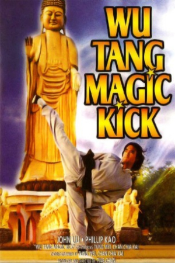

Also known as:神腿 (original title)
Country:TW, 86 minutes
Spoken languages:Mandarin
Genres:Action
Director(s):Ting Chung
Writer(s):
Video Codec:Unknown
Number: 2725


Certification:
Storyline:
On his wedding night Mar Tien Lang, a prosperous businessman and instructor of 'The Magic Kick' technique, is attacked in his villa by the vilainous Fang Kang.
Cast:


Medium: Original DVD,
Comments: Part of: Flying Fists of Kung Fu - 12 movie set
Loaned: No
Aspect ratio: Unknown